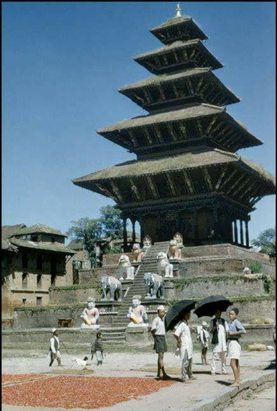

Middle Period History of Nepal
The middle period in Nepalese history is usually considered coterminous with the rule of the Malla dynasty (10th–18th century) in Nepal Valley and surrounding areas. Although most of the Licchavi kings were devout Hindus, they did not impose Brahmanic social codes or values on their non-Hindu subjects. The Mallas perceived their responsibilities differently, however, and the great Malla ruler Jaya Sthiti (reigned c. 1382–95) introduced the first legal and social code strongly influenced by contemporary Hindu principles.
Jaya Sthiti’s successor, Yaksha Malla (reigned c. 1429–c. 1482), divided his kingdom among his three sons, thus creating the independent principalities of Kathmandu, Patan, and Bhaktapur (Bhadgaon) in the valley. Each of these states controlled territory in the surrounding hill areas, with particular importance attached to the trade routes northward to Tibet and southward to India that were vital to the valley’s economy. There were also numerous small principalities in the western and eastern hill areas, whose independence was sustained through a delicate balance of power based upon traditional interrelationships and, in some cases, common ancestral origins (or claims thereto) among the ruling families. By the 16th century virtually all these principalities were ruled by dynasties claiming high-caste Indian origin whose members had fled to the hills in the wake of Muslim invasions of northern India.
In the early 18th century one of the principalities—Gorkha (also spelled Gurkha), ruled by the Shah family—began to assert a predominant role in the hills and even to pose a challenge to Nepal Valley. The Mallas, weakened by familial dissension and widespread social and economic discontent, were no match for the great Gorkha ruler Prithvi Narayan Shah. He conquered the valley in 1769 and moved his capital to Kathmandu shortly thereafter, providing the foundation for the modern state of Nepal.